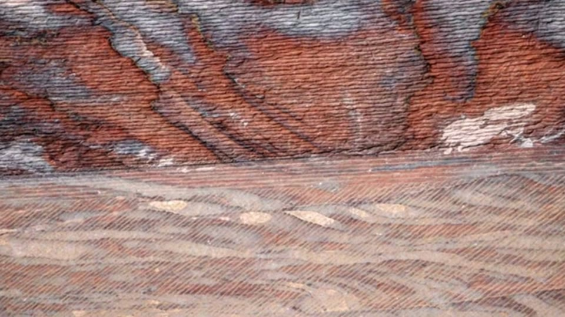
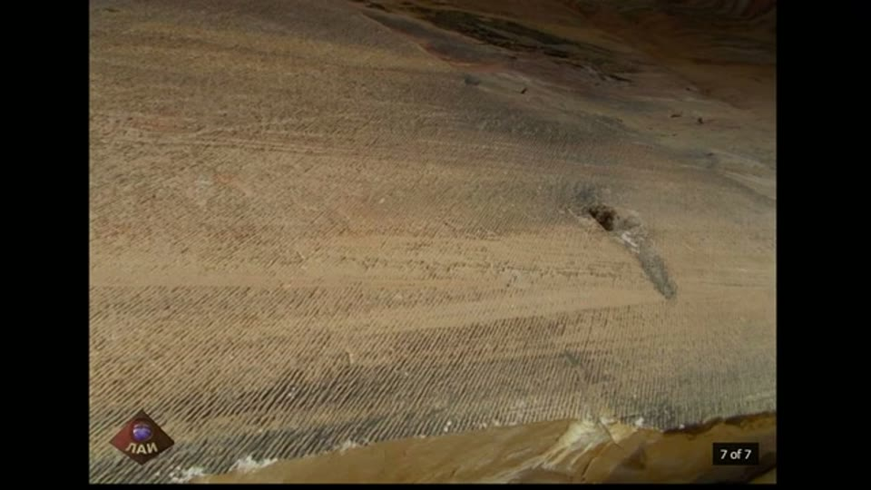
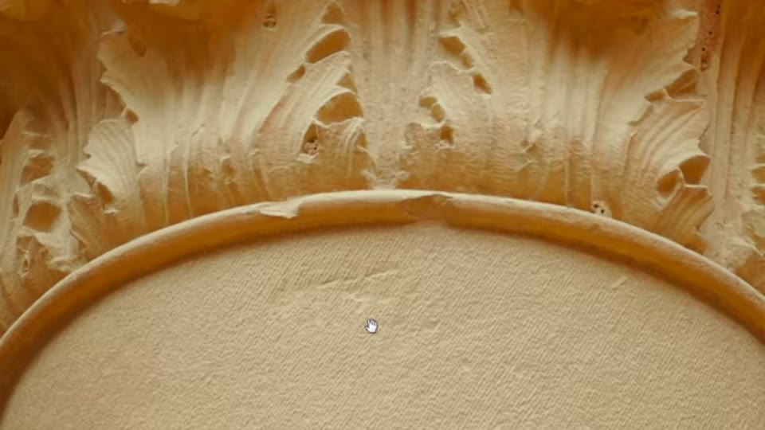
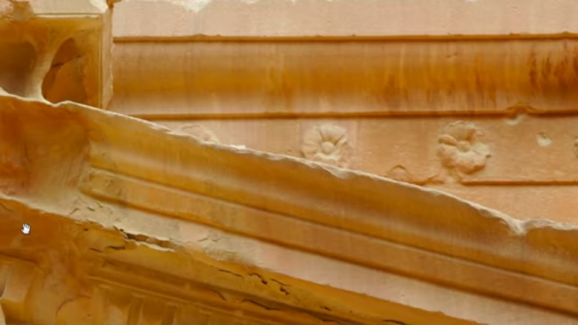
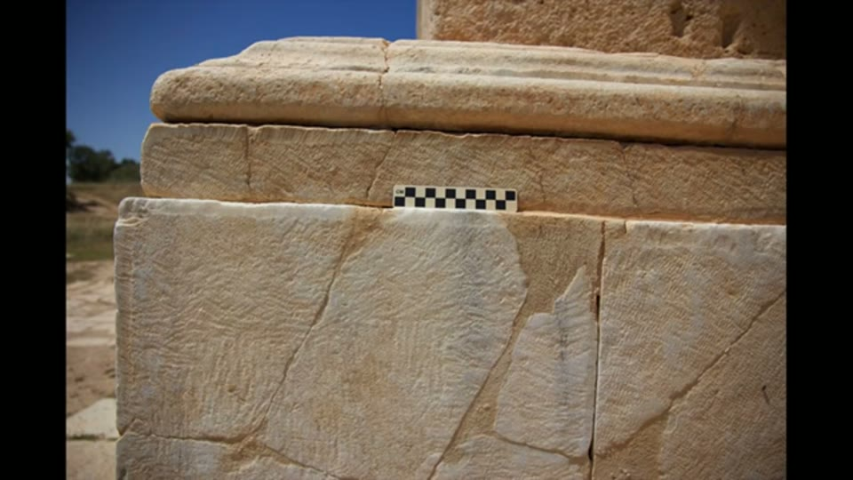
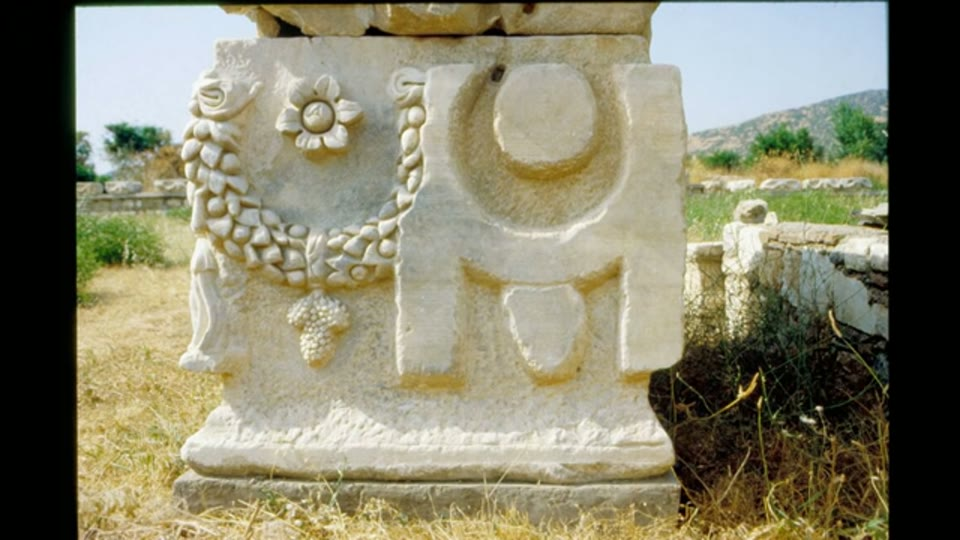
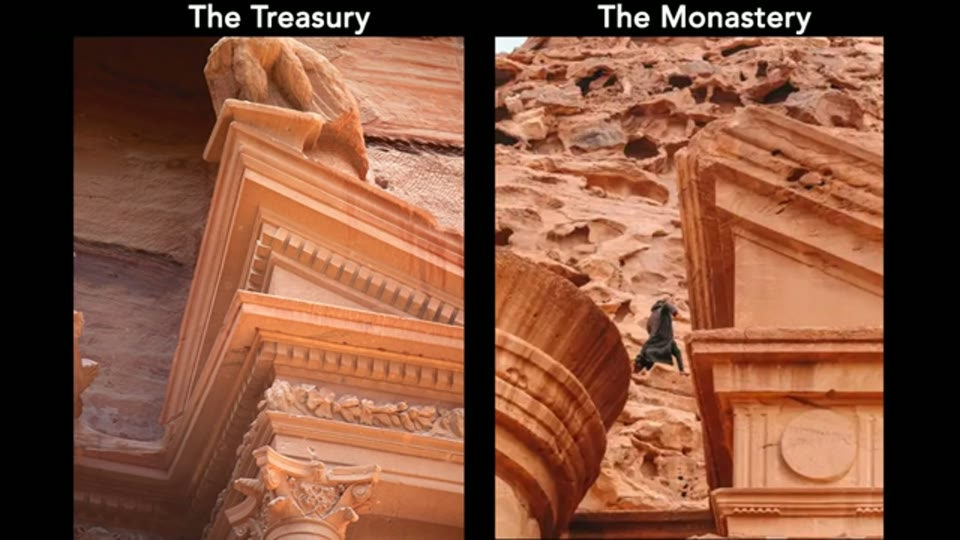
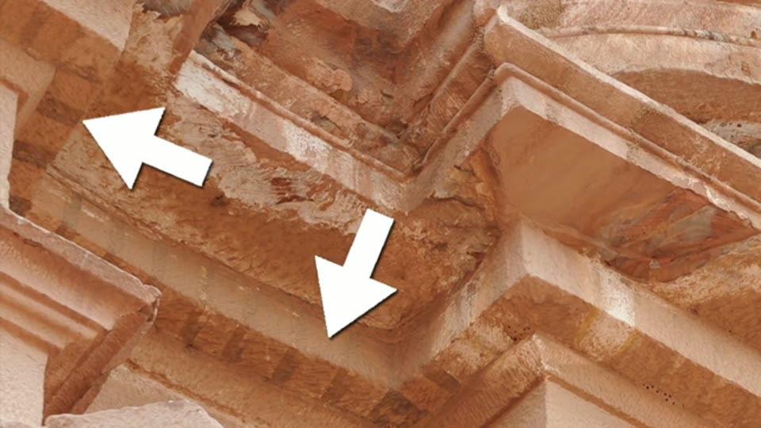

Curious Being
Petra: Incredibly Advanced Tool Marks Tell a Different Story
Tina · 18 min · watch on YouTube · summarised 2026-08-23
The rock-cut monuments of Petra are dated to the Nabataeans, from about the 4th century BC, and the Treasury — nearly 40 m high at the final turn of the Siq — to the 1st century BC or the early 1st century AD. This video is about the tool marks on those surfaces, and about what the order in which marks were made can tell you without dating anything.
Her position on authorship is stated up front and rests on an earlier video 01:22–02:14: almost no surviving Nabataean city looks like Petra, and the closest, Hegra in Saudi Arabia, still differs in the scale, quality and purpose of its rock carving. She takes the Nabataeans to have found Petra and adopted it.
The Urn Tomb, and what a cave costs
The Urn Tomb's chamber is over 3,400 m³ — close to two Olympic pools of stone removed, from a cliff face 02:42–03:06. Its walls and ceilings are covered in fine, uniform, parallel markings, which she reads as machine marks.


The uniform parallel markings that cover the walls and ceiling of a chamber of over 3,400 cubic metres, which she argues hand tools cannot produce.
Two supporting points are factual rather than impressionistic 04:05–04:23. Petra's sandstone is close to 7 on the Mohs scale, with high quartz content — the facades look soft and melted because they are heavily eroded, not because the rock is soft. And she shows a working stonemason cutting sandstone with hammer and chisel, to make the practical case that long, continuous, closely spaced parallel strokes are hard to produce even on a prepared surface.
Then the argument from cost, which recurs through her work 04:24–04:43: dressing an entire cavern with tightly aligned markings is unnecessary. Nobody has to decorate the inside of a hole with a uniform texture. Effort that serves no purpose is either not effort, or is not being explained correctly.
The Treasury: the same marks, on round columns
The Treasury is carved rather than cast, and she says why 05:30–05:44: natural stone veins run continuously from the columns into the walls behind them.
Close photographs show that surfaces smooth from a distance are not smooth at all 05:44–06:14. Delicate parallel markings cover the entablatures, continue across curved surfaces, and — the part she treats as decisive — run around the round columns, holding their spacing and curvature. The lower columns stand about 15 m high, so this work was done well above ground.


The same fine marks continue around round columns and across curved mouldings, holding their spacing on the curve.
She compares the result to a modern 3D stone-carving robot, and finds the same markings again near the Treasury entrance and at the tomb of Sextius Florentinus.
The argument that does not need a date
This is the centre of the video 09:19–10:44, and it is a claim about sequence, not age.
Not all of the Treasury carries the uniform markings. The elaborate Corinthian-style capitals and the decorative reliefs on the frieze carry a different mark, consistent with chisels, and a visibly coarser finish.

Two qualities of work on one facade. Because detail carving comes last, the chiselled ornament has to be later than the finely marked main form.
Her reasoning from there is the standard order of stone carving: rough out the mass, then establish the surfaces and forms, then add the details. Detail carving comes last. So if the ornament carries chisel marks and the main forms carry the finer parallel marks, the chiselled work was done after the finer work — which means the later hand is the cruder one. If a single crew had done all of it, the finishing quality would be consistent.
She reinforces this with two comparisons rather than leaving it as an impression:
- Hegra 08:41–09:08. The rock-cut tombs there, which she accepts as genuinely Nabataean, achieve flat surfaces by careful chipping, leaving small irregular hand-tool marks — a different result from the same intention.
- Greek and Roman practice 10:45–12:17. Their masons preferred smooth surfaces and left almost no tool marks on flat faces or columns, sawing blocks and buffing chisel marks out. She anticipates the obvious rebuttal — that the marks were removed as a finishing step and so cannot be seen today — and answers it with unfinished Greek and Roman work, which shows point and tooth chisel marks that are not continuously parallel. Her closing point on this is a question of motive: if a surface was going to be buffed smooth anyway, carving uniform markings under it makes no sense.


Her answer to the objection that Greek and Roman masons simply buffed their tool marks away: unfinished work shows what those marks looked like, and they are not continuously parallel.
The reworked facade
From there she proposes a specific history for the Treasury 13:05–14:48.
Its original facade may have resembled the Monastery, the other great rock-cut monument at Petra — simpler columns, far less ornament. Capitals of the Monastery's kind would have left enough stone for later reshaping into Corinthian ones.

Her proposal that the Treasury's facade originally resembled the Monastery's, and that its Corinthian detail was cut into it later.
Two physical details are offered in support. The Treasury has unaligned beam holes on both flanks, which the Monastery does not — she reads them as sockets for Roman-era scaffolding raised to work the facade over. And the Palace Tomb's exterior appears to carry painted dentils rather than carved ones, which she takes as a sign of facades being made to look more Hellenistic one at a time.

Dentils that appear to be painted on rather than carved, which she takes as a sign of facades being made to look more Hellenistic one at a time.
The Treasury is the first monument a visitor meets at the end of the Siq, so it would be the obvious one to rework; the Monastery is distant and high, and on this account kept its original character. The Roman-era masons, she suggests, appreciated the existing parallel marks and left them alone.
Her conclusion 15:07–16:36 is that the Treasury's main forms are original work predating Greek and Roman influence, that its Hellenistic details were added later with chisels, and that the original caves may be the work of a prehistoric civilisation with technology on a par with today's. She ends on a question rather than a claim: if Petra's style came first, perhaps the Hellenistic style imitated it rather than the reverse.
What you can check yourself
- Whether two distinct qualities of tool mark are present on the Treasury — fine parallel marks on the main forms, chisel marks on the capitals and reliefs — is a photograph, and it is what everything else here rests on.
- Whether the fine marks continue around the round columns, keeping spacing on a curved surface, is a second photograph and an independent check.
- The unaligned beam holes on the Treasury's flanks, and their absence at the Monastery, can be counted from published images.
- Whether the Palace Tomb's dentils are painted or carved takes one close look.
- Hegra's tombs are photographed and published, and the comparison she draws can be made directly.
- Unfinished Greek and Roman stonework showing point and tooth chisel marks survives at many sites and in museums.
- Petra's sandstone hardness — close to 7 on the Mohs scale, high quartz — is standard petrology.
- The Urn Tomb's 3,400 m³ follows from its dimensions and can be recalculated.
What the video does not settle
- Sequence is not interval. The argument establishes that the ornament was cut after the main forms — which is what any carving workflow predicts anyway — but nothing in it fixes how much time separates them. A single project finishing a facade over a season produces the same order of marks as two civilisations separated by millennia, and the video does not offer anything that distinguishes the two.
- The main form is Hellenistic even without the ornament, which she raises herself and does not resolve. The broken pediment with a central tholos is an architectural vocabulary with a known history; the suggestion that Hellenistic style copied Petra is offered as a question and not argued.
- "Impossible for hand tools" is asserted, not tested. The stonemason clip demonstrates difficulty. No attempt is made to reproduce the marks with a tooth chisel on Petra sandstone, which is the experiment the claim calls for.
- The tooth chisel is answered comparatively rather than directly. The evidence offered is that Greek and Roman tooth-chisel work varies in angle and spacing — which shows what those masons did, not what the tool is capable of in other hands.
- The machine identification rests on resemblance. Continuous miners and carving robots produce marks at spacings set by their own bit geometry; no mechanism is proposed that would produce these particular marks, and no measurement of spacing or depth is taken.
- Nothing dates the beam holes. They are read as Roman scaffolding sockets, which is the conclusion they are being used to support.
- The Nabataean authorship question is treated as already settled by a previous video, so the weakest link in the chain is the one not argued here.
- No material, weathering or residue analysis appears anywhere in the argument.
See also
A Method to Decipher Ancient Machine Marks from Hand Tools — the later video that turns this material into a stated test, and adds the point that at Petra the chisel marks sit physically on top of the finer marks.
What we have not checked
- The 3,400 m³ Urn Tomb volume, the 15 m column height and the Mohs figure are as she gives them and have not been traced.
- The narration says the lower columns are "about 15 m or close to 50 inches" high. 50 feet is meant; the subtitle unit is wrong.
- The identification of the beam holes as Roman-era scaffolding sockets is hers, and no source is given for it.
- The claim that Greek and Roman masons buffed out tool marks as a matter of practice is stated without a source, though the unfinished-work photographs she shows are consistent with it.
- Which specific caves she means by "some caves in Petra have very smooth surfaces with no marks" is not identified; she says herself she has only heard this and wants close-up photographs.
- Two illustrative images are not evidence from Petra and should never be reused as if they were: the dentils are explained over a photograph of a modern white-painted classical-revival building, and the Greek building section runs over a 19th-century painted reconstruction of the Athenian Acropolis. Both are captioned here as what they are; neither is picked.
- The stonemason clip at 03:44–03:58 is described in the narration as sandstone, but the stone in frame is white and reads more like marble. The material cannot be confirmed from the frame, so the clip is not used.